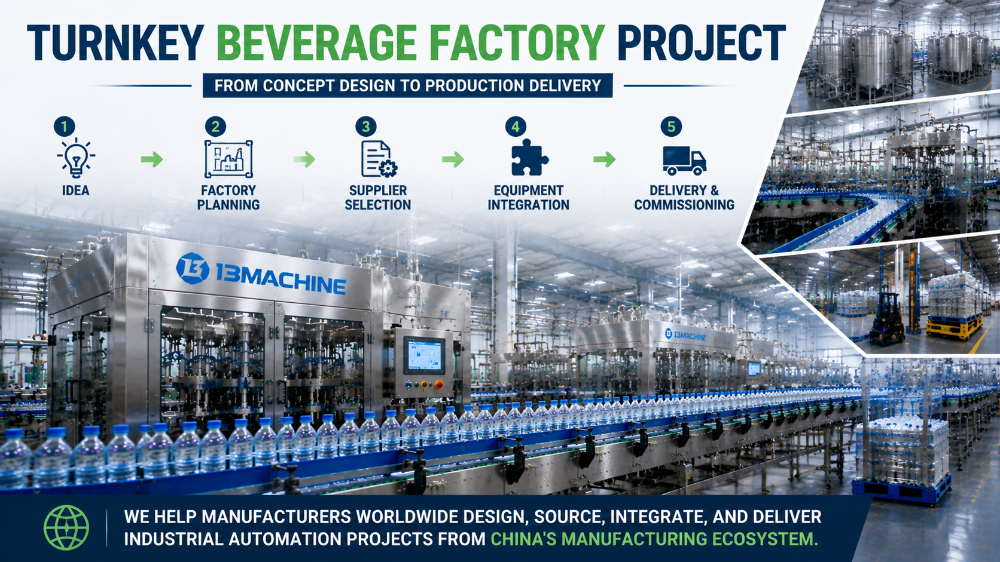

Turnkey Beverage Factory Project: From Concept Design to Production Delivery

Summary
Building a beverage factory is not simply about purchasing machines.
For investors and manufacturers, a successful beverage production project requires a complete industrial execution strategy:
Factory Concept
↓
Production Planning
↓
Process Design
↓
Supplier Selection
↓
Equipment Integration
↓
Factory Delivery
↓
Production Operation
Many companies face difficulties because they purchase individual equipment from multiple suppliers without a complete project management approach.
The result can be:
Poor equipment compatibility
Delayed installation
Higher project risk
Unexpected operating costs
A turnkey beverage factory project requires a partner who understands manufacturing technology, supplier capabilities, automation integration, and international project delivery.
This article explains how modern beverage factories are planned and delivered from the initial idea to final production.
Technology
- Turnkey Beverage Factory Project Technology
- A complete beverage factory combines multiple industrial technologies into one integrated production system.
- 1. Factory Planning Technology
- Before equipment selection
- professional projects require:
- Production capacity analysis
- Factory layout planning
- Material flow design
- Equipment configuration
- The goal is to create an efficient manufacturing environment.
- 2. Beverage Production Technology
- Depending on products
- a beverage factory may include:
- Water treatment
- Beverage processing
- Mixing systems
- Sterilization systems
- Filling technology
- 3. Packaging Automation Technology
- Finished products require:
- Labeling
- Packing
- Palletizing
- Logistics automation
- 4. Industrial Integration Technology
- A complete solution connects:
- Production equipment
- Automation systems
- Quality control
- Warehouse management
- 5. Smart Factory Technology
- Modern beverage factories increasingly use:
- PLC control
- MES systems
- Production monitoring
- Digital traceability
- Creating a more transparent and efficient manufacturing environment.
Challenge
Why Building a Beverage Factory Project Is More Difficult Than Buying Equipment
Many investors initially think:
"I only need to buy a production line."
However, a modern beverage factory is a complex industrial project.
The real challenge is not purchasing machines.
The challenge is creating a complete manufacturing system.
Challenge 1: Lack of Complete Factory Planning
Many projects start with equipment selection before understanding:
Production requirements
Factory space
Future expansion
This often causes:
Inefficient layout
Additional modification costs
Production limitations
Challenge 2: Managing Multiple Equipment Suppliers
A beverage factory may involve:
Processing supplier
Filling supplier
Packaging supplier
Automation supplier
Warehouse supplier
Without professional coordination, integration problems can appear.
Challenge 3: Selecting the Right Technology
Different beverage products require different solutions.
Examples:
Bottled water:
High-speed filling
Large output
Juice:
Processing system
Sterile technology
Functional drinks:
Advanced filling solutions
Wrong technology decisions can affect long-term profitability.
Challenge 4: International Project Communication
For overseas factories, challenges include:
Technical communication
Documentation
Shipping coordination
Installation support
Challenge 5: Controlling Project Investment
A beverage factory requires significant investment.
Companies need to balance:
Initial equipment cost
Production capacity
Operating cost
Future expansion
Solution
How a Turnkey Beverage Factory Project Should Be Delivered
A professional project approach transforms an idea into a working factory.
Stage 1: Factory Concept & Requirement Analysis
Before selecting equipment, analyze:
Product Requirements
Including:
Beverage category
Bottle size
Packaging format
Production Requirements
Including:
Capacity
Working hours
Future expansion
Investment Goals
Including:
Budget
ROI expectation
Automation level
Stage 2: Factory Planning & Layout Design
Develop:
Production workflow
Equipment arrangement
Material flow
Logistics planning
A good layout improves:
Production efficiency
Space utilization
Future expansion
Stage 3: Supplier Selection
Instead of choosing suppliers only by price, evaluate:
Technical Capability
Can they provide:
Complete solutions?
Engineering support?
Manufacturing Capability
Do they have:
Production experience?
Quality control?
Project Experience
Have they completed:
Similar factories?
International projects?
Stage 4: Equipment Integration
A turnkey project requires coordination between:
Production equipment
Automation systems
Packaging systems
Warehouse systems
The goal is:
One complete production system.
Not separate machines.
Stage 5: Delivery & Production Startup
Project execution includes:
Factory acceptance testing (FAT)
Shipping coordination
Installation support
Commissioning
Operator training
Workflow & Layout
📌 Complete Turnkey Beverage Factory Project Workflow
Customer Factory Concept
↓
Requirement Analysis
↓
Production Process Design
↓
Factory Layout Planning
↓
Equipment Configuration
↓
Supplier Evaluation
↓
Equipment Manufacturing
↓
FAT Testing
↓
Shipping & Installation
↓
Production Commissionin
↓
Factory Operation
📌 Complete Beverage Factory System Layout
Raw Material Area
↓
Processing Area
↓
Bottle Production Area
↓
Filling Area
↓
Packaging Area
↓
Finished Product Warehouse
↓
Distribution
📌 Integrated Automation Flow
Production Equipment
↓
PLC Control
↓
MES System
↓
Quality Monitoring
↓
Warehouse Management
Results & ROI
- Why Turnkey Project Management Creates Higher Business Value
- A professional turnkey approach improves the entire investment result.
- 1. Lower Project Risk
- Avoid:
- Wrong equipment selection
- Poor integration
- Production delays
- 2. Faster Factory Startup
- Professional coordination reduces:
- Installation problems
- Communication delays
- Commissioning time
- 3. Better Production Efficiency
- Integrated systems provide:
- Stable production
- Higher output
- Better quality
- 4. Lower Long-Term Operating Cost
- Optimized solutions reduce:
- Labor dependency
- Waste
- Maintenance problems
- 5. Higher Investment Return
- A properly designed factory creates value through:
- Higher production capacity
- Better product quality
- Market competitiveness
- ⭐ Example:
- 📌Traditional Approach
- Customer:
- Finds 10 different suppliers
- ↓
- Coordinates everything independently
- ↓
- Faces integration problems
- 📌Turnkey Approach
- Customer:
- Defines factory goal
- ↓
- Receives complete solution
- ↓
- One project coordination process
- ↓
- Production starts faster
Equipment List
- A complete turnkey beverage factory may include:
- 📌Beverage Processing System
- Water treatment system
- Mixing system
- CIP system
- Sterilization system
- 📌Bottle Production System
- PET preform handling
- Blow molding machine
- Bottle conveying system
- 📌Filling Production Line
- Filling machine
- Capping machine
- Inspection system
- 📌Packaging System
- Labeling machine
- Shrink wrapping machine
- Cartoning machine
- Robotic palletizer
- 📌Logistics Automation
- Conveyor system
- AGV transportation
- ASRS warehouse
- 📌Digital Manufacturing System
- PLC control
- SCADA
- MES integration
Project Overview / Opening
Building a Beverage Factory Requires More Than Equipment Purchasing
A successful beverage factory is the result of thousands of engineering decisions.
From the first factory concept to the final production delivery, every stage affects:
Investment efficiency
Production reliability
Product quality
Future expansion
Manufacturers do not simply need machines.
They need a project partner who understands how to connect China's manufacturing capabilities with global factory requirements.
Key Points
- The Five Critical Steps of a Successful Beverage Factory Project
- 1. Define the Factory Goal
- Understand:
- Product
- Capacity
- Market
- 2. Design Before Buying Equipment
- Plan:
- Process
- Layout
- Automation
- 3. Select Reliable Suppliers
- Evaluate:
- Technology
- Quality
- Experience
- 4. Integrate All Systems
- Connect:
- Machines
- Automation
- Logistics
- 5. Manage Delivery
- Control:
- Manufacturing
- Testing
- Installation
Implementation / Workflow
How We Support International Beverage Factory Projects
Step 1: Project Requirement Understanding
We analyzes
Customer objectives
Production requirements
Factory conditions
Step 2: Solution Development
We create:
Production concept
Equipment configuration
Factory layout
Step 3: China Supplier Ecosystem Matching
Based on project requirements, we identify suitable manufacturers for:
Beverage equipment
Automation systems
Packaging solutions
Step 4: Project Coordination
Manage:
Technical communication
Supplier coordination
Quality inspection
Step 5: Delivery Support
Support:
FAT process
Logistics coordination
Installation communication
Project completion
Customer Value / Results
Working with a project integration partner provides:
⭐One Professional Communication Channel
Reduce the complexity of managing multiple suppliers.
⭐Access to China's Manufacturing Ecosystem
Connect with suitable manufacturing capabilities.
⭐Better Project Control
Improve:
Timeline management
Technical coordination
Quality control
⭐Reduced Investment Risk
Make better decisions before purchasing.
⭐Complete Factory Transformation
Move from an initial idea to a functioning production system.
Conclusion / Next Step
Building a beverage factory is not simply a machine purchasing project.
It is a complete industrial investment process requiring:
Factory planning
Technology selection
Supplier evaluation
Equipment integration
Project delivery management
The biggest challenge for international manufacturers is often not finding equipment.
It is finding the right manufacturing partner who can connect global requirements with reliable industrial capabilities.
We help manufacturers worldwide design, source, integrate, and deliver industrial automation projects from China's manufacturing ecosystem.
As a China Manufacturing Project Integration Partner, we support customers with:
Industrial project planning
Supplier selection
Production line integration
Automation solutions
Factory delivery coordination
Whether you are building a new beverage factory or upgrading an existing manufacturing facility, we help transform your ideas into reliable industrial systems.
📩 Start your beverage factory project discussion through our Contact page.
SEO Title
Turnkey Beverage Factory Project: From Concept Design to Production Delivery
SEO Description
Building a beverage factory is not simply about purchasing machines.
For investors and manufacturers, a successful beverage production project requires a complete industrial execution strategy:
Factory Concept
↓
Production Planning
↓
Process Design
↓
Supplier Selection
↓
Equipment Integration
↓
Factory Delivery
↓
Production Operation
Many companies face difficulties because they purchase individual equipment from multiple suppliers without a complete project management approach.
The result can be:
Poor equipment compatibility
Delayed installation
Higher project risk
Unexpected operating costs
A turnkey beverage factory project requires a partner who understands manufacturing technology, supplier capabilities, automation integration, and international project delivery.
This article explains how modern beverage factories are planned and delivered from the initial idea to final production.
Related Blog
Start with Your Business Challenge
Tell us about your warehouse, factory, or production requirements. We'll help you explore practical automation solutions and relevant project references.